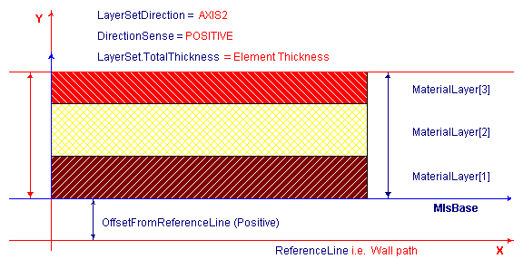

Definition from IAI: Determines the usage of IfcMaterialLayerSet in terms of its location
and orientation relative to the associated element geometry. The location of material layer set shall be
compatible with the element geometry (i.e. material layers shall fit inside the element geometry).
EXAMPLE: For a cavity brick wall with extruded geometric representation, the
IfcMaterialLayerSet.TotalThickness shall be equal to the wall thickness.
Material layer set is primarily intended to be associated with planar elements with constant thickness.
With further agreements on the interpretation of layer set direction, the usage can be extended also to other
cases, e.g. to curved elements.
Generally, an element may be layered in any of its primary directions, denoted by its x, y or z axis.
However, with geometry use definitions for specific elements, it may become evident which direction is the
relevant one for layering.
EXAMPLE: For a standard wall with extruded geometric representation (vertical
extrusion), the layer set direction shall be perpendicular to extrusion direction, and coinside with the
direction denoting the wall thickness (in positive or negative sense). For a curved wall, "direction denoting
the wall thickness" can be derived from the element LCS, but it will remain perpendicular to the wall
path.
EXAMPLE: For a slab with vertically extruded geometric representation, the layer
set direction shall coinside with the extrusion direction (in positive or negative sense).
